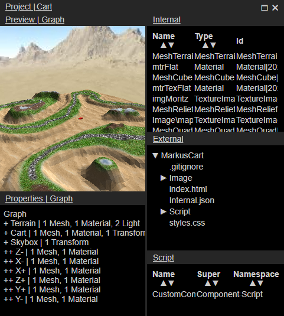
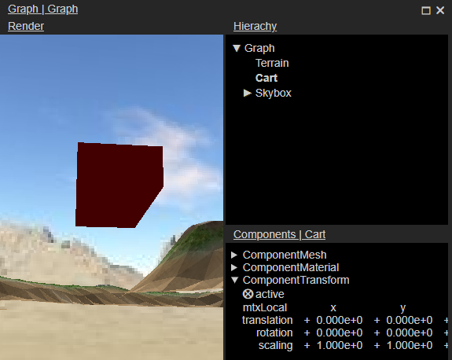

Welcome to FUDGE
This help-panel offers an introduction to the editor and how to work with it. For an introduction to the engine
visit the start page or the Wiki.
Click on the headlines for details.
-
General interface concepts
- Open the various editor panels using "Edit" in the main menu or the keyboard shortcuts.
- A panel consists of multiple views that control specific sets of data.
- Hover on a view with the mousecursor to get further instructions.
- Control the views mostly by drag & drop and context menus (right mouseclick).
- Control numeric inputs by selecting digits with the mouse or the arrowkeys and use the mousewheel or arrow
keys to alter. Press F2 to input a full new value or just start typing when the input field is selected.
-
Start a project
- Select "New" under "Project" in the main menu.
- Choose or create an empty folder, the folder's name becomes your project's name.
- Review the project settings and hit "OK".
- The project panel and the graph panel open and display the current state of your new project (which is
empty).
-
Project Panel

- External View the files in the project. Serves as a starting point to use external
files like images or sounds via drag&drop to the view "Internal".
- Internal View the internal resources of the project that will be serialized to the file
"Internal.json". Drag & drop internal resources to the appropriate locations to use them. Drop a branch from
a "Hierarchy" view here to create a graph as a resource.
- Preview Renders a preview of the resource selected in the views "Interal" or
"External".
- Properties Displays the properties of the selected resource. Offers drop-locations for
internal resources.
- Script Shows a list of custom scripts available in the project. Drop on "Graph|Components" to
attach to a node.
-
Graph Panel

- Render Drop a graph from "Project|Internal" here to edit.
Navigate the editor camera to view the rendering of the graph. Select nodes by clicking and use the keyboard
together with the mouse to manipulate transformations.
- Hierarchy View the graph as a hierarchical tree. Create new nodes and manipulate the
parent child relationsships
- Components View the components attached to the selected node. Manipulate by adjusting
values, dropping internal resources or using mouse-movement in the Render-View.